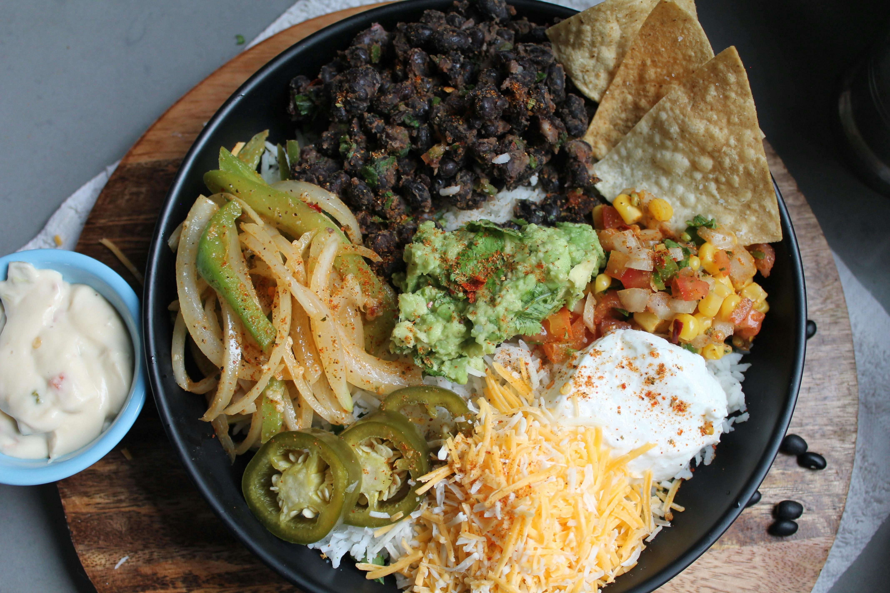

Burrito Bowl

Description
Looking for high calorie and high protein meal? Then this is the recipe for you!
Nicely seasoned chicken, refreshing rice, and delicious vegetables.
All to hit your macro nutrient goals!
Ingredients
makes 5
- 2.5lb boneless skinless chicken thighs
- 1 Tbsp oil
- 2 tsp paprika
- 2 tsp cumin
- 2 tsp onion powder
- 2 tsp garlic powder
- 2 tsp ancho chili powder
- 1 tsp salt
- 2 Tbsp lime juice
- 2 Tbsp orange juice
- 5 cups (750g) cooked rice
- 2 cans (880g) pinto beans
- 2 Tbsp lime juice
- 1 Tbsp oil
- Salt and pepper to taste
- 3 medium (500g) russet potatoes
- 2 medium (300g) bell peppers, any colour
- 1 medium (200g) onion
- 2 Tbsp oil
- 1 Tbsp lime juice
- 10 Tbsp shredded monterey cheese
- 1.25 cups (300g) salsa, but you favourite jar
- 10 Tbsp (150g) sour cream
Steps
- Cook enough rice to yield 750g of cooked rice.
- Preheat your oven to 425°F.
- In a large bowl, add 1 Tbsp of oil and the paprika, cumin, onion powder, garlic powder, chili powder, salt, lime juice, and orange juice.
- After mixing up the spices. Add the chicken and coat all surfaces of it.
- Line a large sheet pan with foil and spray it with oil. Add the chicken thighs and put into oven (when preheating finished).
- Cook for 20 minutes. While the chicken is cooking go to For the Vegetables section and prep that.
- After the time is done pull the chicken out and chop in to large dice.
- Wash and cut your potatoes in to a large dice.
- Toss the diced potatoes with 1 Tbsp of oil and salt and pepper in a large bowl.
- Cook the potatoes in the air fryer at 400°F for 15 or until you can poke a fork through them.
- Cut the bell peppers and onion into thin slices.
- Cook the peppers and onions in a large skiller over medium high heat with 1 tbsp of oil.
- In a large bowl combine your rice and rinsed pinto beans.
- Add 1 tbsp oil, 2 tbsp lime juice, and salt and pepper to taste.